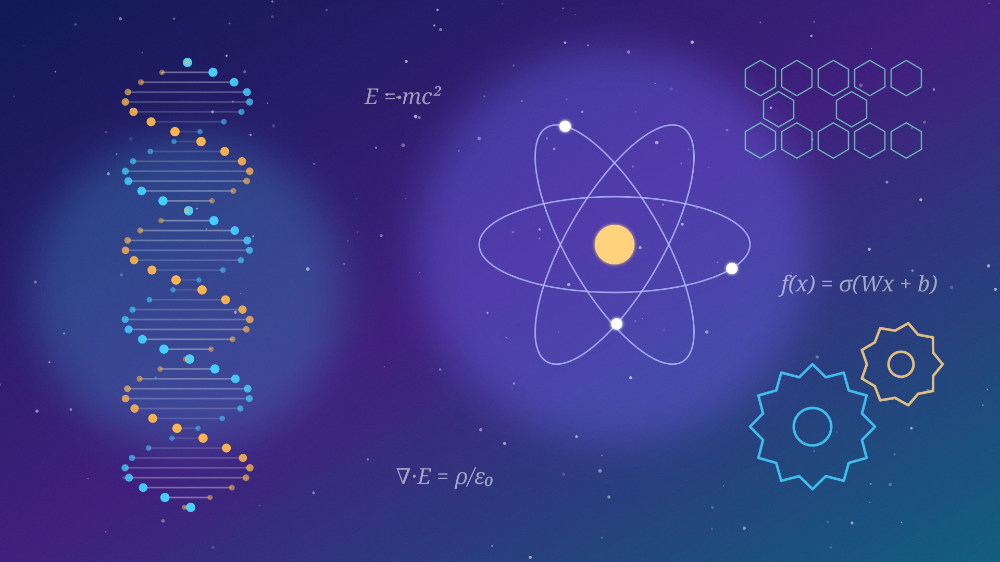

Beyond AI. Learn, research and build Super Intelligence. ก้าวไปไกลกว่า AI เรียนรู้ วิจัย และสร้าง Super Intelligence
DeepDistrict is an SI learning and research lab in Bangkok. Every course is designed around you, from your first line of code to research you can publish, live on Zoom, onsite or hybrid.
DeepDistrict คือห้องปฏิบัติการเรียนรู้และวิจัยด้าน SI ในกรุงเทพฯ ทุกหลักสูตรออกแบบมาเพื่อคุณ ตั้งแต่โค้ดบรรทัดแรกจนถึงงานวิจัยที่ตีพิมพ์ได้ เรียนสดผ่าน Zoom ที่แล็บ หรือแบบไฮบริด
SI is what comes after AISI คือสิ่งที่มาหลัง AI
Today's AI is a powerful tool: it answers questions, writes and recognises patterns. SI, Super Intelligence, is the next horizon: intelligence that reasons, discovers and creates beyond the best human minds, in almost every field.
AI ในวันนี้คือเครื่องมือที่ทรงพลัง ตอบคำถาม เขียน และจดจำรูปแบบได้ ส่วน SI หรือ Super Intelligence คือขอบฟ้าถัดไป คือความฉลาดที่ให้เหตุผล ค้นพบ และสร้างสรรค์ได้เหนือกว่ามนุษย์ที่เก่งที่สุด ในแทบทุกสาขา
Any intellect that greatly exceeds the cognitive performance of humans in virtually all domains of interest.สติปัญญาใด ๆ ที่เหนือกว่าความสามารถทางการคิดของมนุษย์อย่างมาก ในแทบทุกด้านที่เราให้ความสำคัญ
What is more than AI? Switch and see.อะไรที่มากกว่า AI? ลองสลับดู
Seven capabilities, side by side. Toggle between today's AI and the SI goal.
เจ็ดความสามารถ เทียบกันแบบเห็นชัด สลับดูระหว่าง AI ในวันนี้กับเป้าหมาย SI
Isn’t today’s AI enough?AI ตอนนี้ ยังไม่พออีกหรือ?
Why start nowทำไมต้องเริ่มตอนนี้No two learners are the same. Neither are our courses.ไม่มีผู้เรียนคนไหนเหมือนกัน หลักสูตรของเราก็เช่นกัน
Every course is customised to your goals, level, interests and schedule, and keeps adapting as you grow.
ทุกหลักสูตรปรับให้ตรงกับเป้าหมาย ระดับ ความสนใจ และตารางเวลาของคุณ และปรับต่อเนื่องเมื่อคุณเติบโต
Live on Zoom, onsite or hybridเรียนสดผ่าน Zoom ที่แล็บ หรือไฮบริด
Choose per course, and switch when your life changes. Hardware labs run onsite or hybrid.
เลือกได้ในแต่ละรายวิชา และเปลี่ยนได้เมื่อชีวิตของคุณเปลี่ยน ส่วนแล็บฮาร์ดแวร์จัดที่แล็บหรือแบบไฮบริด
Four levels, one path to SIสี่ระดับ หนึ่งเส้นทางสู่ SI
Start where you are. Each level unlocks the next, all the way to SI research.
เริ่มจากจุดที่คุณอยู่ แต่ละระดับปลดล็อกระดับถัดไป จนถึงงานวิจัยด้าน SI

Your interest. Your topic. Your published work.ความสนใจของคุณ หัวข้อของคุณ ผลงานตีพิมพ์ของคุณ
The Innovation Lab adapts completely to what you care about. We help you find a topic, then mentor you through research, building and writing until you publish or compete.
แล็บนวัตกรรมปรับตามสิ่งที่คุณสนใจทั้งหมด เราช่วยคุณหาหัวข้อ แล้วดูแลตลอดการวิจัย การสร้างผลงาน และการเขียน จนถึงการตีพิมพ์หรือการแข่งขัน
- From age 10 to professionals, any fieldตั้งแต่อายุ 10 ปีจนถึงคนทำงาน ทุกสาขา
- A personal mentor and a milestone planมีอาจารย์ที่ปรึกษาส่วนตัวและแผนหลักไมล์
- Ends in a paper, competition entry or productจบด้วยบทความ ผลงานแข่งขัน หรือผลิตภัณฑ์
Illustrative output from an edge-AI lab exercise (EDG310).ตัวอย่างผลลัพธ์จากแบบฝึกหัดแล็บ Edge AI (EDG310)
Twelve picks for the new era12 คอร์สเด่นสำหรับยุคใหม่
Not a long list: the courses that matter most now. Vibe coding, STEM AI, frontier AI agents, Swift and Apple AI, Apple Vision Pro, innovation and research, competitions and computer standard tests.
ไม่ใช่รายการยาว แต่เป็นคอร์สที่สำคัญที่สุดในตอนนี้ ทั้ง Vibe Coding, STEM AI, AI Agent ล้ำสมัย Swift และ AI ของ Apple, Apple Vision Pro นวัตกรรมและวิจัย การแข่งขัน และสอบมาตรฐานด้านคอมพิวเตอร์
Six groups, combined your wayหกกลุ่มหลักสูตร ผสมผสานได้ตามใจคุณ
Foundation programming, software and apps, AI and data, hardware and robotics, research and innovation, and standard tests and admissions.
พื้นฐานการเขียนโปรแกรม ซอฟต์แวร์และแอป AI และข้อมูล ฮาร์ดแวร์และหุ่นยนต์ วิจัยและนวัตกรรม และสอบมาตรฐานและเข้ามหาวิทยาลัย
For learners, families, schools and industryเพื่อผู้เรียน ครอบครัว โรงเรียน และภาคอุตสาหกรรม
A small dot on the world, with a big purposeจุดเล็ก ๆ บนโลก ที่มีเป้าหมายยิ่งใหญ่
We are a small lab in Bangkok that wants to strengthen and support learning and research in STEM and SI, so that people everywhere can use them to create and to keep developing a better world.
เราเป็นจุดเล็ก ๆ บนโลก ที่ต้องการสร้างเสริมและสนับสนุนการเรียนรู้และการวิจัยด้าน STEM และ SI เพื่อให้ผู้คนนำไปสร้างสรรค์และพัฒนาโลกให้ดียิ่งขึ้นต่อไป